Ember Twin, one of the two Hourglass Twins, is the closet planet to the sun. Ember Twin is primarily made of red canyons and cliffs with cacti and rock formations covering its surface. A large canyon encircles its equator, exposing the planet's core. Ember Twin also features an intricate cave system where many ancient structures can be found. Over the course of the loop, sand will fall into Ember Twin, causing its caves to become inaccessible.
Ember Twin without sand
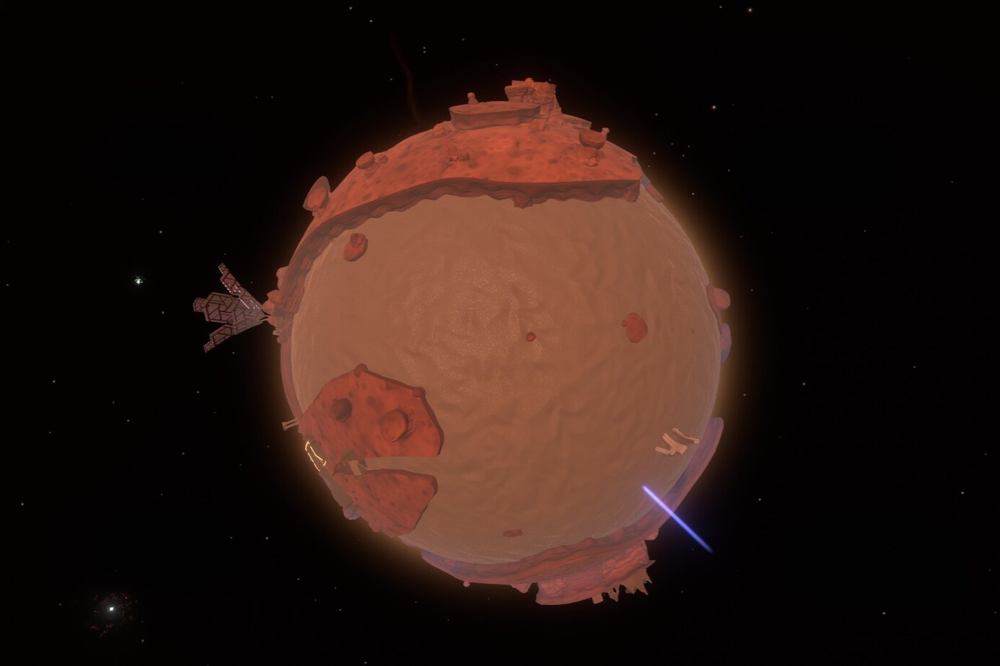
Ember Twin with sand
NATURAL PHENOMENA
Some time after the loop starts, a giant sand funnel will form, filling Ember Twin with Ash Twin's sand. The sand funnel slowly moves across both twins' equators until the sand has been completely drained from Ash Twin. Standing under the sand funnel as it fills Ember Twin will crush the player under its weight. As sand falls into Ember Twin, locations previously accessible become buried in sand.
PLACES OF INTEREST
Escape Pod 2
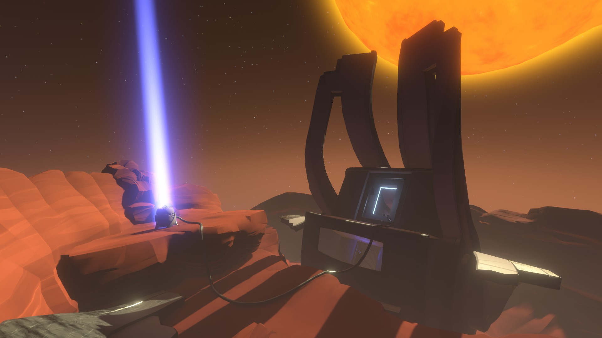
One of the three Nomai escape pods that crashed in the Outer Wilds solar system. The escape pod was launched from the Vessel after it had taken significant damage. The Nomai survivors on Escape Pod 2 were Annona, Bur, Rhus, Melorae, and Coleus. When Escape Pod 2 crash landed on Ember Twin, it broke into one of the many cave systems, allowing the survivors to find a safe, long-term shelter away from the surface's inbearable heat. A device outside the escape pod broadcasts a distress signal that can be tracked by the player. The Nomai used these distress signals to locate the other escape pods after the crash.
The Sunless City
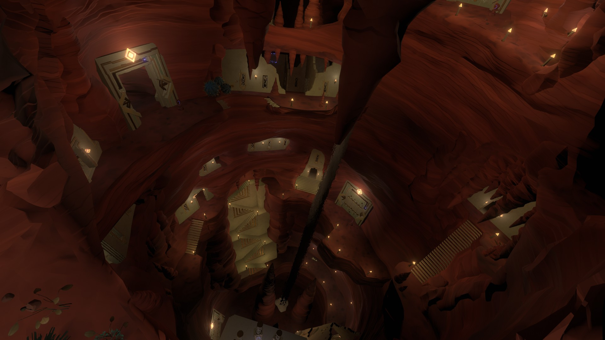
The Sunless City is a Nomai city built into the walls of a huge underground cavern, home to the survivors of Escape Pod 2 and their descendants. The city is divided vertically into four districts: Anglerfish Overlook, Stepping Stone, Eye Shrine, and the High Energy Lab Trailhead. The Anglerfish Overlook District is the second highest district and the main entrance of the Sunless City. It features a staircase that leads a cavern where an anglerfish fossil can be viewed, as well as a small, two-leveled neighborhood of Nomai houses. The Stepping Stone District is the second lowest district. It features ruined Nomai homes that belonged to children, as well as a passage that leads to the Stepping Stone Cave. The Eye Shrine District is the highest district and acts as a temple to the Eye of the Universe. The High Energy Lab Trailhead is the lowest district that acts as the beginning of the trail leading to the High Energy Lab. Along one of the walls is a platform surrounded by trees that contains four switches connected to each of the districts' lights.
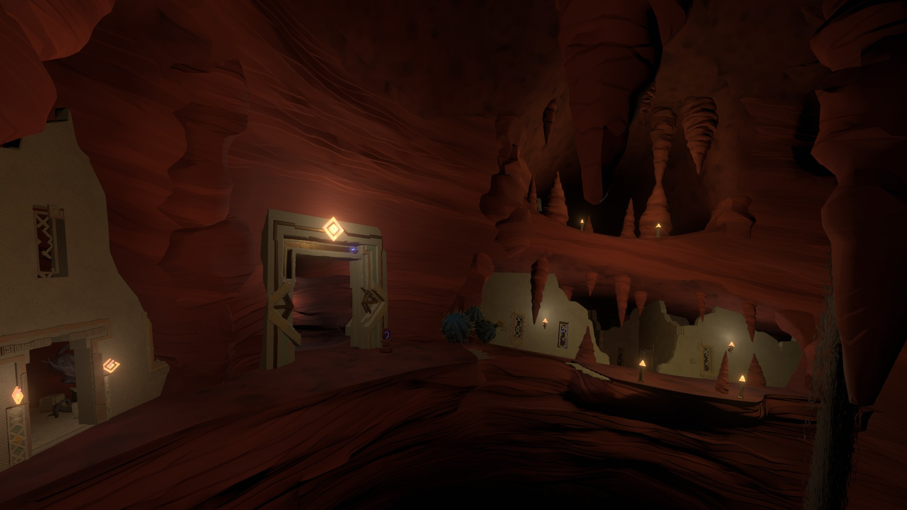
Anglerfish Overlook District
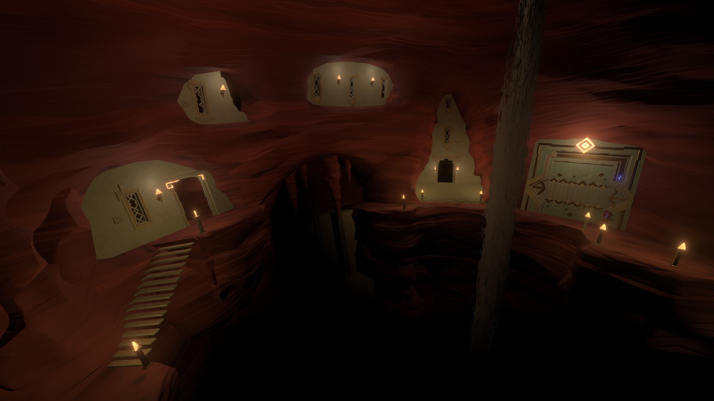
Stepping Stone District
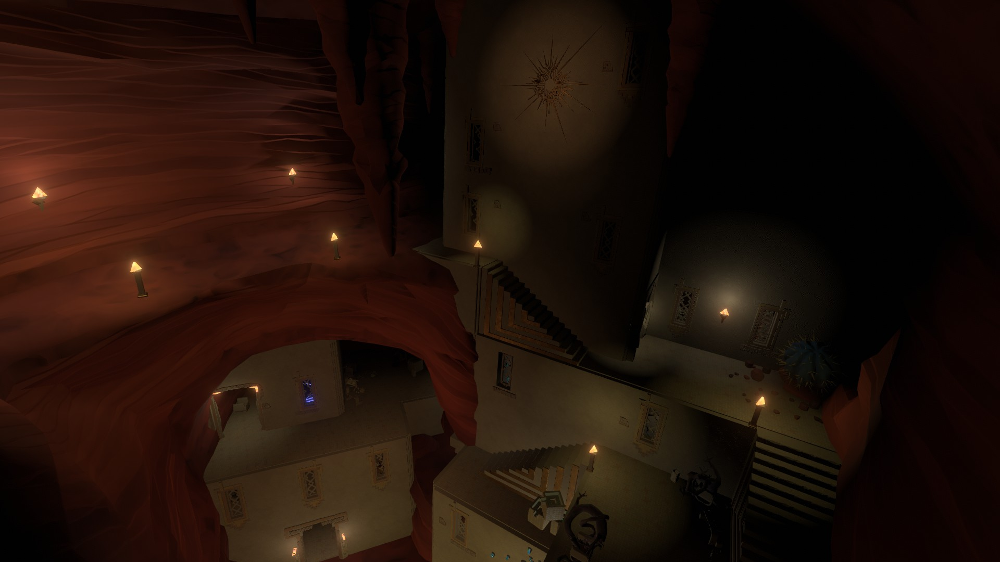
Eye Shrine District
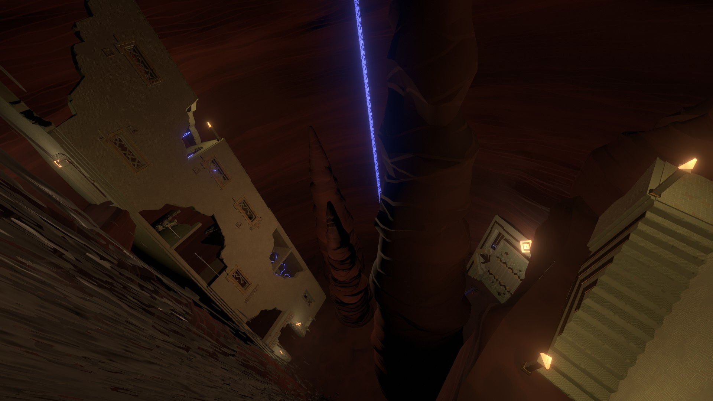
High Energy Lab Trailhead
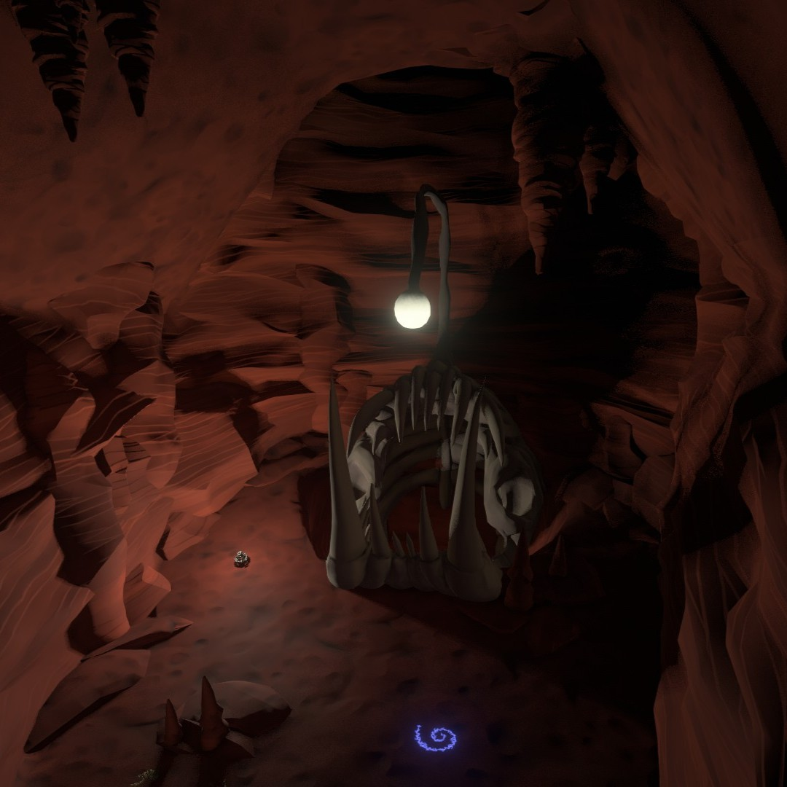
Anglerfish Fossil
The Anglerfish Fossil is located in a large cavern in the Stepping Stone district of the Sunless City. The cavern posseses a few openings where the fossil can be viewed, one of which is located in the Anglerfish Overlook. Nomai children would come to the Anglerfish fossil to play a game. For Nomai children who were too big to fit through the Anglerfish Overlook hole, they were instructed to "feed the fossil fish" by tossing a light into it's mouth, then go through the Stepping Stone cave and up into the fossil cavern. In the game, one player was the "anglerfish" and wore a blindfold. The rest of the children were the "littlefish" and would line up against the wall. When the anglerfish said go, the littlefish had to sneak across to the other side of the cavern. The adult Nomai were delighted to see the children incorporate their research into the game's rules. Above the fossil is a gravity lift leading to a chamber where the adult Nomai have documented their studies on the fossil. Their research suggests that the anglerfish did not originate from Ember Twin and likely died from starvation.
High Energy Lab
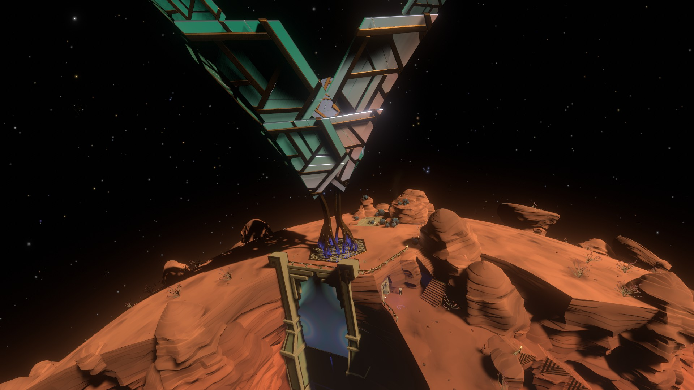
The High Energy Lab is a Nomai structure built into Ember Twin's equatorial canyon. The lab's main door is broken and cannot be opened. The only way inside is through the High Energy Lab Trailhead. In the High Energy Lab, the Nomai researched high energy warp cores. A large experimental testing area can be found inside, connected to a solar energy tower. The power from the energy tower can be diverted from the Sunless City to the testing area. In this testing area, there are two empty slots where black hole or white hole warp cores can be inserted and a viewport large enough for a scout to pass through. Inserting a black hole and white hole warp core causes a small black hole and white hole to appear inside the testing area.
Testing the black and white holes by shooting the scout into it reveals the scout exits the white hole before it enters the black hole, creating a small window where two scouts exist at the same time. Removing one of the warp cores while the scout is travelling through the black hole causes the scout to duplicate, creating a crack in the fabric of spacetime and leading to the Breaking Spacetime ending. This ending is the only one that changes the ending credits song, turning it into a kazoo cover of the game's main theme.
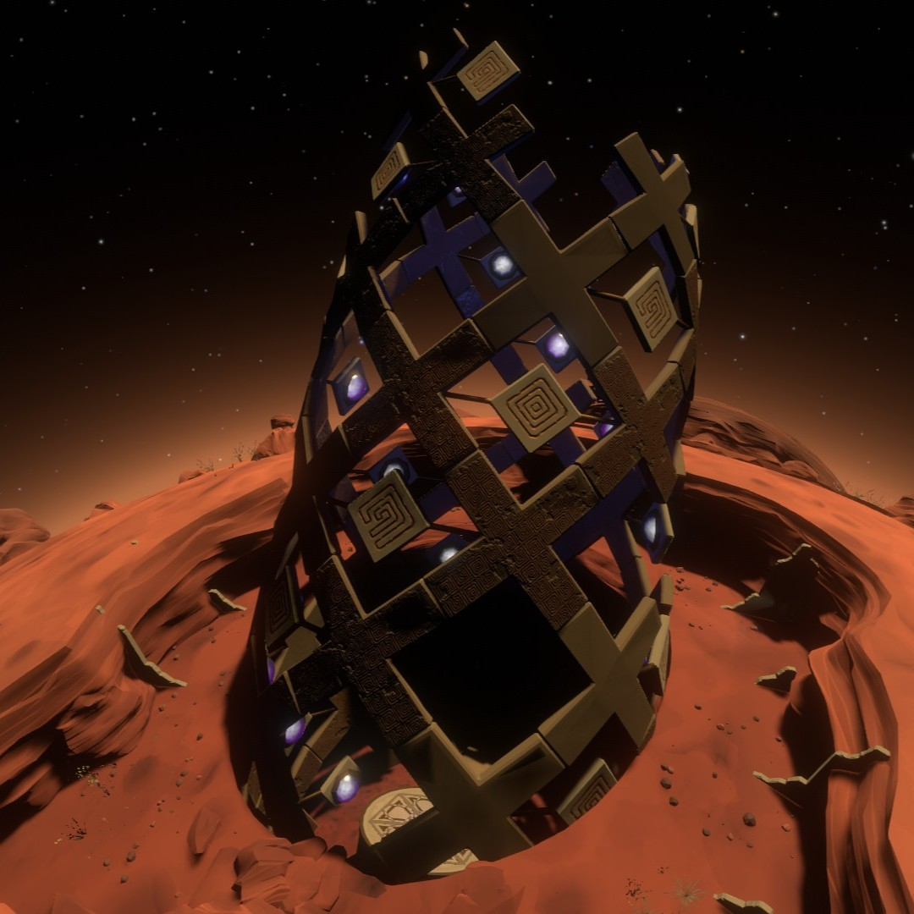
Gravity Cannon
The gravity cannon is a huge cylindrical structure that generates a strong upward gravity field. The Nomai used the gravity cannon to launch their shuttles into space. The gravity cannon has two controls: activating the gravity cannon and calling a shuttle home. Calling a shuttle at this gravity cannon recalls the Nomai shuttle stuck on the Interloper. Inside the shuttle is a Nomai log written by Clary, where she expresses her worry with her situation. She explains that she, Pye, and Poke landed on the Interloper not long after it's arrival in the solar system and picked up a strange reading coming from beneath the surface. Pye and Poke left the shuttle to investigate the source of the reading, but have not made contact with Clary, who remained on the shuttle to follow protocol, in a long time. A Nomai skeleton most likely belonging to Clary can be found inside the shuttle.
Chert's Camp
This camp is set up on Ember Twin's north pole by Chert, a Hearthian astronomer tasked with observing the galaxy and updating star charts. Chert has set up their camp with various different astronomy equipment and can be found playing the drums. They are passionate about their work and will at some point comment, "Sometimes I think I'm the only traveler out here interesting in doing any science at all." Over the course of the loop, Chert's attitude changes drastically as they watch the stars. At the start of the loop, Chert enthusiastically notes that they saw a couple of supernovae, which is unusual to see in one day. Later in the loop, they tell the player that they noticed ten to twelve supernovae so far, which causes them to become nervous, stating that something isn't right. Near the end of the loop, Chert is in a full panic after seeing too many supernovae occur, telling the player that all of the stars are dying out. They claim that this is the end of the universe and that our sun is next. At the end of the loop, Chert seems to be coming to terms with their impending doom, inviting the player to sit and watch the stars die with them. They comment on how unlucky they were to have been born at the end of the universe.
Lakebed Cave
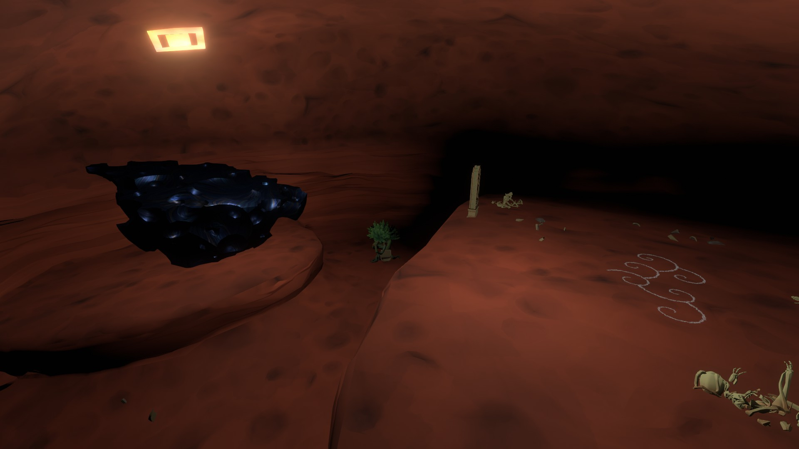
The Lakebed Cave is a deep winding cave at the very bottom of the dry lakebed at Ember Twin's north pole which quickly becomes inaccessible due to the sand. This cave is where a Nomai named Coleus disappeared for several days. In this cave, Coleus and Melorae were investigating a wandering rock fragment that would sometimes appear in the cave. While Coleus was standing on the rock, Melorae's lantern went out. When the lantern was relit, both Coleus and the rock were gone. Melorae initiated a search for Coleus, but they never found him themselves. When replicating how Coleus disappeared, the player can find themself transported into a cavern with no entrace or exit. In this cavern, Coleus left some notes about his sudden transportation into this new cavern. Coleus freed himself from the cavern after he had realized he had become entangled with a quantum object when it was no longer being observed, leading to the discovery of a new quantum rule.
Quantum Moon Locator
The Quantum Moon Locator, located on Ember Twin's south pole, is a Nomai device created to track the Quantum Moon's location. On the device itself are a set of rings with five different symbols representing each planet in the solar system and one symbol representing the Quantum Moon, all pointing to their respective locations. The Quantum Moon travels to a total of five locations: the Hourglass Twins, Timber Hearth, Brittle Hollow, Giant's Deep, and Dark Bramble. However, sometimes the Quantum Moon disappears without a trace, causing the locator to spin endlessly until the Quantum Moon reappears. Through this device, the Nomai hypothesized that the Quantum Moon may be a form of macroscopic quantum mechanics.